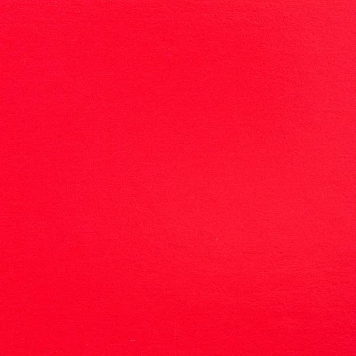

Psicologia das Cores
A Psicologia das Cores é um estudo que busca compreender o comportamento humano em relação às cores. Dessa forma, essa área da psicologia analisa e define quais os efeitos que cada cor gera nas pessoas, como mudanças nas emoções, nos sentimentos, a criação de desejos e muito mais.
| Cores | |
|  | Vida, fogo, paixão, força, energia, amor, liderança, masculinidade, alegria (China), raiva, revolução, perigo, realeza, entusiasmo, agressividade, guerra, força, velocidade, aviso de "pare“. |
| Purificação, amabilidade, paciência, serenidade, harmonia, confidência, conservadorismo, austeridade, monotonia, dependência, tecnologia, liberdade, saúde, energia celeste, paternidade, paz. | |
| Concentração, disciplina, comunicação, intelectualidade, positividade, riqueza, infância, luz, vivacidade, alegria, fraqueza. | |

|
Natureza, primavera, fertilidade, juventude, desenvolvimento, riqueza, dinheiro, sorte, ciúmes, ganância, esperança, abundância, cura, harmonia, equilíbrio, revelação, liberdade. |
| Equilíbrio, generosidade, entusiasmo, alegria, atração, aconchego, ligado ao fogo e à ignição, energia, criatividade, equilíbrio, entusiasmo, ludismo, nutrição. |